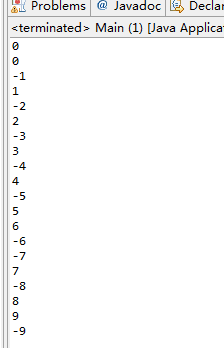
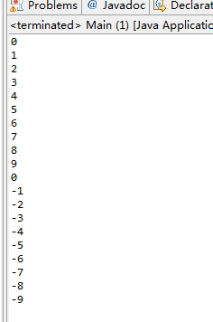

线程Thread类的start()方法和run()方法
初识
java的线程是通过java.lang.Thread类来实现的。VM启动时会有一个由主方法所定义的线程。可以通过创建Thread的实例来创建新的线程。每个线程都是通过某个特定Thread对象所对应的方法run（）来完成其操作的，方法run()称为线程体。通过调用Thread类的start()方法来启动一个线程。
在Java当中，线程通常都有五种状态，创建、就绪、运行、阻塞和死亡。
- 创建状态 在生成线程对象，并没有调用该对象的start方法，这是线程处于创建状态。
- 就绪状态 当调用了线程对象的start方法之后，该线程就进入了就绪状态，但是此时线程调度程序还没有把该线程设置为当前线程，此时处于就绪状态。在线程运行之后，从等待或者睡眠中回来之后，也会处于就绪状态。
- 运行状态 线程调度程序将处于就绪状态的线程设置为当前线程，此时线程就进入了运行状态，开始运行run函数当中的代码。
- 阻塞状态 线程正在运行的时候，被暂停，通常是为了等待某个时间的发生(比如说某项资源就绪)之后再继续运行。sleep,suspend，wait等方法都可以导致线程阻塞。
- 死亡状态 如果一个线程的run方法执行结束或者调用stop方法后，该线程就会死亡。对于已经死亡的线程，无法再使用start方法令其进入就绪。
start()方法
为什么需要start方法；它的作用是什么?
start（）方法来启动线程，真正实现了多线程运行。
start方法的作用就是将线程由NEW状态，变为RUNABLE状态。当线程创建成功时，线程处于NEW（新建）状态，如果你不调用start( )方法，那么线程永远处于NEW状态。调用start( )后，才会变为RUNABLE状态，线程才可以运行。
调用start（）方法后，线程是不是马上执行？
线程不是马上执行的；准确来说，调用start( )方法后，线程的状态是“READY（就绪）”状态，而不是“RUNNING（运行中）”状态（关于线程的状态详细。线程要等待CPU调度，不同的JVM有不同的调度算法，线程何时被调度是未知的。因此，start（）方法的被调用顺序不能决定线程的执行顺序
注意：
由于在线程的生命周期中，线程的状态由NEW —-> RUNABLE只会发生一次，因此，一个线程只能调用start（）方法一次，多次启动一个线程是非法的。特别是当线程已经结束执行后，不能再重新启动。
run()方法
run方法又是一个什么样的方法？run方法与start方法有什么关联？
run（）方法当作普通方法的方式调用
run( )其实是一个普通方法，只不过当线程调用了start( )方法后，一旦线程被CPU调度，处于运行状态，那么线程才会去调用这个run（）方法；
run（）方法的执行是不是需要线程调用start（）方法
上面说了，run（）方法是一个普通的对象方法，因此，不需要线程调用start（）后才可以调用的。可以线程对象可以随时随地调用run方法。
示例
用start方法启动线程
|
|
结果:

说明两线程是并发执行的。
用run方法启动线程
|
|

说明两线程实际是顺序执行的
总结：
通过实例1和实例和我们可以知道start方法是用于启动线程的，可以实现并发，而run方法只是一个普通方法，是不能实现并发的，只是在并发执行的时候会调用。
源码解析
|
|
|
|
真正理解Thread类
Thread类的对象其实也是一个java对象，只不过每一个Thread类的对象对应着一个线程。Thread类的对象就是提供给用户用于操作线程、获取线程的信息。真正的底层线程用户是看不到的了。
因此，当一个线程结束了，死掉了，对应的Thread的对象仍能调用，除了start( )方法外的所有方法（死亡的线程不能再次启动），如run( )、getName( )、getPriority（）等等
|
|